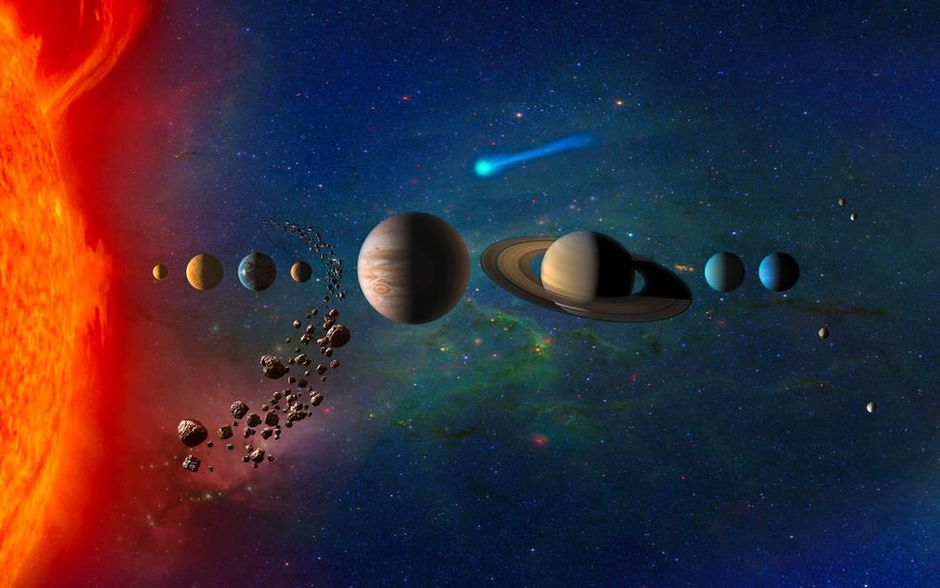

My hobbies are learning about space and doing art. This is because
I am captivated about learning planets and other mysteries about the universe by watching documentary shows about it.
Wonders of the Universe
How the Universe Works
For art, I like to paint and draw objects that I see.

Image of the solar system